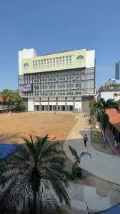

- Home
- PJOK
- Informatika
- Biologi
- Inggris
-
Sejarah

Sel Tumbuhan
Sel tumbuhan adalah sel yang menyusun fungsi kerja dari seluruh fungsi kehidupan tumbuhan. Bagian sel tumbuhan dibagi menjadi 11
Membran Sel
Membrane sel atau sering juga disebut membran plasma merupakan struktur yang hampir dimiliki oleh semua makhluk hidup, mulai dari hewan, tumbuhan, jamur, bakteri, arkaea, hingga protista
Dinding Sel
Berbeda dengan membran sel yang dimiliki oleh makhluk hewan atau manusia, sel tumbuhan dan jamur diketahui memiliki struktur penyusun yang unik yakni dinding sel. Dengan adanya dinding sel, hal ini menjadikan tumbuhan memiliki struktur yang unik dibandingkan dengan sel yang ada pada hewan.
Sitoplasma
Cairan dalam sel yang berada di antara nukleus dengan membran plasma biasa disebut dengan istilah sitoplasma. Sitoplasma sendiri pada dasarnya memiliki dua komponen penyusunnya, yaitu sitosol dan beberapa organel lainnya. Sitosol merupakan komponen penyusun yang memiliki bagian cair dari sitoplasma dan mengelilingi organel.
Nukleus
Nukleus sendiri bisa dikatakan sebagai inti dari sel yang dimiliki oleh tumbuhan. Nukleus ini merupakan pusat dari administrasi sel yang dapat mengarahkan proses metabolisme, mulai dari pertumbuhan, pembelahan, bahkan juga sintesis protein. Di dalam nukleus atau inti sel sering kali tersimpan kromosom atau sebuah komponen genetik yang tersusun dari berbagai benang kromatin.
Ribosom
Ribosom menjadi salah satu bagian dari penyusun sel tumbuhan berikutnya. Ribosom ini bisa dipahami sebagai partikel yang lebih kecil dari mitokondria. Meskipun kecil, ribosom merupakan sel penyusun tumbuhan yang memiliki ukuran yang padat. Hingga saat ini, alat yang bisa digunakan untuk melihat ribosom pada sel tumbuhan ini hanyalah mikroskop elektron.
Retikulum Endoplasma
RE sendiri bisa dipahami sebagai organ sel yang bertindak sebagai saluran dalam sitoplasma yang menghubungkan antara membran sel dengan nukleus. Retikulum endoplasma sendiri sering juga disebut sebagai sistem angkutan yang ada pada sel tumbuhan untuk berbagai macam molekul di dalam sel. Namun, tidak hanya di dalam sel, RE juga bisa menyalurkan berbagai molekul dari antar sel melalui plasmodesmata. Hal ini menjadikan organ sel ini memiliki fungsi sebagai transportasi protein.
Badan Golgi
Badan golgi pada awalnya merupakan penemuan dari seorang ahli histologi dan patologi yang berasal dari negara Italia, sosok tersebut bernama Camillo Golgi. Pada sel penyusun yang dimiliki tumbuhan, badan Golgi biasa juga disebut sebagai diktiosom. Badan golgi bisa dipahami sebagai tumpukan kantong yang dilapisi membran dan bertugas untuk mempersiapkan protein yang akan diekspor dari sel.
Mitokondria
Mitokondria bisa dikatakan sebagai sebuah organel sel yang mempunyai struktur kompleks untuk melakukan pembentuk energi terhadap tumbuhan. Pada makhluk hidup yang lain, mitokondria dapat digunakan sebagai tempat untuk melakukan respirasi. Respirasi sendiri merupakan sebuah proses perombakan atau katabolisme yang digunakan untuk menghasilkan energi atau tenaga bagi berlangsung proses hidup.
Sel yang menyusun tumbuhan berikutnya adalah lisosom. Lisosom ini sendiri bisa dikatakan sebagai pusat pencernaan sel yang menghasilkan berbagai jenis enzim. Lisosom juga diketahui mampu memecah partikel makanan dan mendaur ulang komponen sel yang sudah usang.
Vakuola
Vakuola merupakan sel tumbuhan dewasa yang berisi berisi cairan dan mengandung ion anorganik terlarut, asam organik, gula, enzim, dan senyawa metabolit sekunder lainnya. Secara sederhana, vakuola bisa dikatakan memiliki fungsi sebagai penyimpan limbah beracun serta produk bermanfaat lain, seperti air. Vakuola dalam sel tumbuhan menempati kisaran antara 80 hingga 90% dari total volume sel.
Kloroplas
Organ sel terakhir yang hanya ada pada tumbuhan adalah kloroplas. Kloroplas sendiri bisa dipahami sebagai organ sel yang memiliki kandungan pigmen hijau yang menangkap sinar matahari untuk selanjutnya diubah menjadi gula. Proses ini sendiri biasanya disebut sebagai fotosintesis untuk menghasilkan karbohidrat dan oksigen pada tumbuhan.